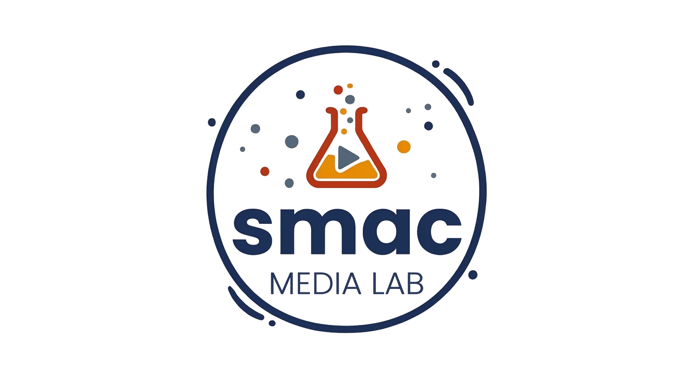

Branding lab · Sunshine Coast
Something's brewing
in the lab.
Our new website is under construction. In the meantime, we're still making brands, websites and SEO that work. Say hello.
hello@smacmedialab.com.au

Branding lab · Sunshine Coast
Our new website is under construction. In the meantime, we're still making brands, websites and SEO that work. Say hello.